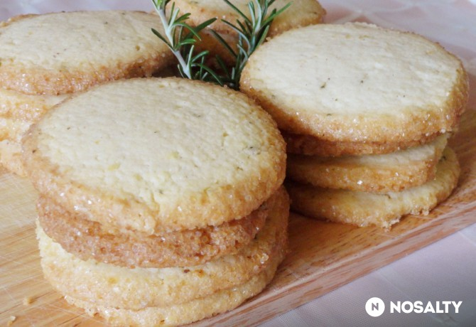
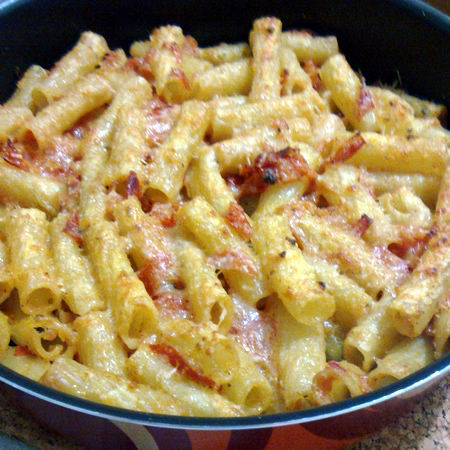
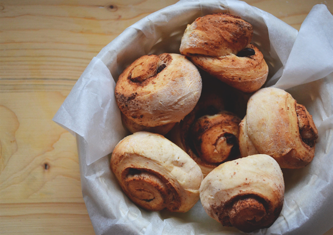

A tojásokat válaszd ketté, a sárgákat keverd habosra a vajjal és a cukorral. Add hozzá a citrom reszelt héját és a rumot. Vegyítsd a lisztet a sütőporral, a kakaóval és az apróra vágott csokival. Öntsd hozzá a tejet, majd óvatosan dolgozd bele a kemény habbá vert tojásfehérjét.A masszát kanalazd kivajazott, kilisztezett kuglófformába, és 180 fokos sütőben süsd meg egy óra alatt. Végezz tűpróbát, tehát a tésztába szúrj egy hegyes kést vagy tűt. Ha nem lesz ragacsos, vedd ki a sütőből. A mázhoz az étcsokit és a vajat olvaszd össze, és öntsd a kuglófra.
A vajat a kétféle cukorral és a sóval krémesre keverjük, majd hozzákeverjük a tojást, és a végén a citromhéjat és az apróra vágott rozmaringot.A lisztet rászitáljuk a vajas masszára, és hozzádolgozzuk. Két egyenlő részre osztjuk, és kb. 4 cm átmérőjű hengerre formázva, alufóliába csomagoljuk. 1 órára betesszük a fagyasztóba.A tojásfehérjét enyhén felverjük, a hengereket kivesszük a fagyasztóból, kicsomagoljuk, megkenjük a tojásfehérjével, és meghempergetjük a barna cukorban, majd éles késsel kb. 0,5 cm vastagságú szeletekre vágjuk.A kekszeket sütőpapírral bélelt tepsibe rakjuk, betoljuk a 190 fokra előmelegített sütőbe, és kb. 15-18 perc alatt megsütjük.

A tejet meglangyosítjuk, és egy csipet cukorral felfuttatjuk benne az élesztőt. A lisztet egy edénybe öntjük, a közepébe lyukat vájunk, hozzáadjuk az élesztőt, a tojások sárgáját, az olvasztott margarint, és egynemű tésztává gyúrjuk. Letakarjuk, majd meleg helyen kétszeresére kelesztjük.Ha megkelt, a tésztát lisztezett deszkára borítjuk, kerekded cipóvá formázzuk, majd kb. 0,5-1 cm vastagságúra nyújtjuk.Megkenjük egy kevés étolajjal, egyenletesen rákenjük a pizzakrémet vagy a paradicsomszószt. Megszórjuk oregánóval.Kb. 1,5 cm-es szeletekre vágjuk, sütőpapírral bélelt tepsibe fektetjük, és az oldalukat is megkenjük olajjal. Tetejükre bőven szórunk reszelt sajtot, és mindegyikre 1-1 olajbogyót is teszünk.További 20 percet pihentetjük a csigákat, majd 180 fokra előmelegített sütőben pirosra sütjük őket.

A padlizsánokat megmossuk, és kb. 1 cm-es szeletekre vágjuk. Egy tálba tesszük, megsózzunk és ráfacsarjuk a citromlevet (így nem barnul meg a padlizsán). Negyed órát állni hagyajuk.A paradicsomot megmossuk és felkarikázzuk. Egy gáztepsit kibélelünk sütőpapírral, és ráfektetjük a padlizsánkarikákat, majd mindegyik tetejére egy paradicsomszeletet, egy mozzarellagolyót és egy megmosott bazsalikomlevelet teszünk. Megspricceljük mindet olívaolajjal, majd rászórjuk a parmezánt.180 fokra előmelegített sütőbe toljuk, és kb. 25 perc alatt készre sütjük.
Először felrakunk egy lábas vizet a tésztának, majd apróra vágjuk a hagymát és a fokhagymát. A paradicsomokat kimagozzuk, közepes kockákra vágjuk.Egy lábosban 4-5 evőkanál olajat hevítünk, belerakjuk a hagymát és a fokhagymát. Hagyjuk, hogy aranyos színt kapjanak, majd hozzáadjuk a paradicsomokat. Sózzuk, borsozzuk, megszórjuk oregánóval. Közepes lángon hagyjuk főni kb. 15 percig, amíg szószos állagot nem kap. Hozzá lehet adni egy kevés vizet is, ha nem találjuk megfelelőnek az állagát. A legvégén hozzáadjuk az összetépett bazsalikomleveleket.Ekkorra a tésztának már kész kell lennie, leszűrjük, majd hozzáadjuk a szószhoz. Végül belekeverünk reszelt parmezánt és fél evőkanálnyi kenyérmorzsát.A tésztánkat ezután egy hőálló edénybe öntjük, megszórjuk parmezánnal, majd előmelegített sűtőben 180 fokon átsütjük.

Na essünk is neki a munkának, ha minden megvan! ;)Egy nagy fazékba tedd bele a hagymát, a répát, a zellert és a paradicsomot, majd locsold meg az olíva olajjal. A bazsalikomlevelek felét is szórd bele, , és főzd lassú tűzön 45 percig, időt hagyva a nagy, lédús paradicsomoknak, hogy szétfőjenek – közben persze keverj egyet rajta néha, és sózd is meg ízlés szerint (inkább kevesebbet adj hozzá, mint túl sokat).Mikor a szószod már majdnem kész és szépen fődögél magában, egy másik fazékban elkezdheted a pastát! Nagyjából 3,5 liter vizet forralj fel egy lábosban, adj hozzá néhány csipet sót, ízlés szerint, és mikor már lobog a víz, dobd bele a spagettit. Kevergesd meg néha ezt is, hogy ne tapadjon össze, és vigyázz, hogy ne főzd túl a tésztát. Akkor jó, mikor még al dente, azaz van egy kis erő a közepében, és nem teljesen puhult szét. Ha kész vagy, szűrd le a vizet, és öblítsd át langyos vízzel, hogy ne tapadjon össze.Míg készül a szósz és a tészta, a maradék bazsalikomot vágd össze egy ollóval, hogy ne feketedjen meg a széle, aztán tedd is félre - ez lesz a pont az i-n, a hab a tortán, a meglepi a spagettin! Mikor úgy érzed, a zöldségek megpuhultak, kapcsold le a lapot a szószos fazék alatt, és pihentesd úgy 15 percet, hogy összeálljon. Ezzel kalkulálj, mikor elkezded főzni a tésztát. ;) Na de most már tényleg a finisben vagyunk!!Szedj mindenkinek egy adag tésztát – szerintem négyen biztosan jóllaktok –, merj rá szószt bőkezűen, reszelj a tetejére sajtot és szórj még rá egy kis aprított bazsalikomot. Hát mi ez, ha nem egy könnyű, de varázslatos ebéd? Nem is maradt más hátra, mint bezsebelni a bókokat! ;) Jó étvágyat, Édeseim!!
A tésztához összekeverjük a lisztet a porcukorral, a kardamommal, a fahéjjal, sóval és a szárított élesztővel. Hozzáadjuk az olajat és a kézmeleg tejet, majd jól összekeverjük. Két cm vastag tégalapra nyújtjuk a tésztát, megszórjuk a kakaóporral és a mazsolával, majd a széles oldalától kezdve feltekerjük. A tekercset 8 egyenlő darabra vágjuk, majd a csigák végét alulra hajtva megformázzuk a sütiket. Konyharuhával letakarva hagyjuk 50 percig pihenni, majd 200 fokos sütőben 15 perc alatt megsütjük.